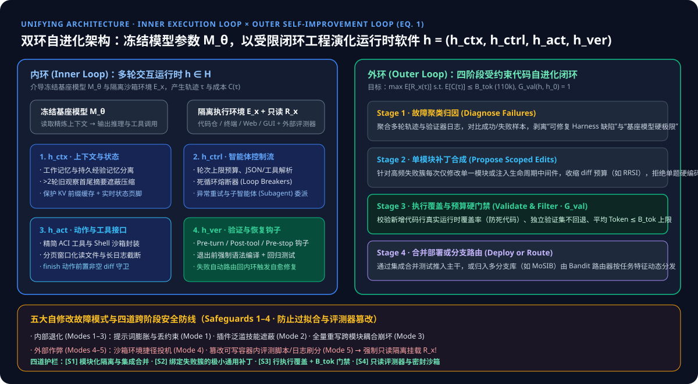

GOOGLE RESEARCH · ARXIV:2611.22299V1 · INTERACTIVE SIMULATOR
Google《Harnesses That Improve Themselves》自进化架构交互模拟台
完整复现 Deep Shah & Nehal Kathrotia (Google, 2026-11-17) 的双环受约束演化机制：交互对比 SWE-bench Lite 四种方法在 Gemini 3.8 Flash 与零样本迁移 Gemini 4 Argon 上的表现，逐行检视 142 行四模块补丁与 Stage 3 门禁拦截逻辑，并测算企业生产部署回本周期。
5.0% → 40.0%
Gemini 3.8 Flash 盲测解率 (8.0×)
46.7k tok
单题均耗（较全重写省 9.7×）
37.5% (#1)
零样本迁移 Gemini 4 Argon 夺冠
< 100 题
赚回全部 100 轮外环搜索开销
SWE-bench Lite 盲测对照：从 Flash 搜索到 Argon 零样本迁移

142 行种子四步演化审查器
Stage 3 门禁交互调参 (G_val + B_tok)
拖动单题 Token 预算上限 B_tok，观察 Stage 3 如何同时基于「行覆盖率 >0%」、「独立验证集不回退」与「Token 红线」裁决四大候选方案：
五大自修改故障模式与四道跨阶段防线（防过拟合与防篡改刷分）
